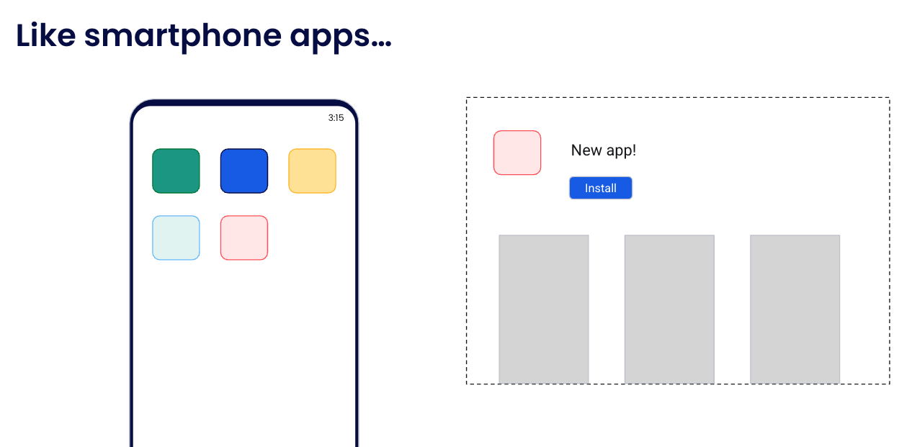

What is a container
Let’s compare containers to smartphone apps.

Most of us have smartphones that have lots of apps installed on them.
When is the last time you thought about how to install the dependencies for one of those apps, how to configure it, and how to set it up? Well, probably never.
We typically just open the app store, click the Install button
And when we open the newly installed red app, we don’t have to worry about how the dependencies and libraries for the green app are going to affect it - they all run in isolated or sandboxed environments.
Containers bring this same idea to other types of applications and services, although they are implemented a little differently.
What are containers?
Simply put, containers are isolated processes for each of your app's components. Each component - the frontend React app, the Python API engine, and the database - runs in its own isolated environment, completely isolated from everything else on your machine.
Here's what makes them awesome. Containers are:
- Self-contained. Each container has everything it needs to function with no reliance on any pre-installed dependencies on the host machine.
- Isolated. Since containers run in isolation, they have minimal influence on the host and other containers, increasing the security of your applications.
- Independent. Each container is independently managed. Deleting one container won't affect any others.
- Portable. Containers can run anywhere! The container that runs on your development machine will work the same way in a data center or anywhere in the cloud!
Containers versus virtual machines (VMs)
Without getting too deep, a VM is an entire operating system with its own kernel, hardware drivers, programs, and applications. Spinning up a VM only to isolate a single application is a lot of overhead.
A container is simply an isolated process with all of the files it needs to run. If you run multiple containers, they all share the same kernel, allowing you to run more applications on less infrastructure.
What is Docker?
Docker is an open platform for developing, shipping, and running applications. Docker enables you to separate your applications from your infrastructure so you can deliver software quickly. With Docker, you can manage your infrastructure in the same ways you manage your applications. By taking advantage of Docker's methodologies for shipping, testing, and deploying code, you can significantly reduce the delay between writing code and running it in production.
Docker architecture
Docker uses a client-server architecture. The Docker client talks to the Docker daemon, which does the heavy lifting of building, running, and distributing your Docker containers. The Docker client and daemon can run on the same system, or you can connect a Docker client to a remote Docker daemon. The Docker client and daemon communicate using a REST API, over UNIX sockets or a network interface. Another Docker client is Docker Compose, that lets you work with applications consisting of a set of containers.
The Docker daemon
The Docker daemon (dockerd) listens for Docker API requests and manages Docker objects such as images, containers, networks, and volumes. A daemon can also communicate with other daemons to manage Docker services.
The Docker client
The Docker client (docker) is the primary way that many Docker users interact with Docker. When you use commands such as docker run, the client sends these commands to dockerd, which carries them out. The docker command uses the Docker API. The Docker client can communicate with more than one daemon.
Docker Desktop
Docker Desktop is an easy-to-install application for your Mac, Windows, or Linux environment that enables you to build and share containerized applications and microservices. Docker Desktop includes the Docker daemon (dockerd), the Docker client (docker), Docker Compose, Docker Content Trust, Kubernetes, and Credential Helper. For more information, see Docker Desktop.
Docker registries
A Docker registry stores Docker images. Docker Hub is a public registry that anyone can use, and Docker looks for images on Docker Hub by default. You can even run your own private registry.
When you use the docker pull or docker run commands, Docker pulls the required images from your configured registry. When you use the docker push command, Docker pushes your image to your configured registry.
Docker objects
When you use Docker, you are creating and using images, containers, networks, volumes, plugins, and other objects. This section is a brief overview of some of those objects.
Images
An image is a read-only template with instructions for creating a Docker container. Often, an image is based on another image, with some additional customization. For example, you may build an image that is based on the Ubuntu image but includes the Apache web server and your application, as well as the configuration details needed to make your application run.
You might create your own images or you might only use those created by others and published in a registry. To build your own image, you create a Dockerfile with a simple syntax for defining the steps needed to create the image and run it. Each instruction in a Dockerfile creates a layer in the image. When you change the Dockerfile and rebuild the image, only those layers which have changed are rebuilt. This is part of what makes images so lightweight, small, and fast, when compared to other virtualization technologies.
Containers
A container is a runnable instance of an image. You can create, start, stop, move, or delete a container using the Docker API or CLI. You can connect a container to one or more networks, attach storage to it, or even create a new image based on its current state.
By default, a container is relatively well isolated from other containers and its host machine. You can control how isolated a container's network, storage, or other underlying subsystems are from other containers or from the host machine.
A container is defined by its image as well as any configuration options you provide to it when you create or start it. When a container is removed, any changes to its state that aren't stored in persistent storage disappear.
Example docker run command
The following command runs an ubuntu container, attaches interactively to your local command-line session, and runs /bin/bash.
$ docker run -i -t ubuntu /bin/bash
When you run this command, the following happens (assuming you are using the default registry configuration):
-
If you don't have the
ubuntuimage locally, Docker pulls it from your configured registry, as though you had rundocker pull ubuntumanually. -
Docker creates a new container, as though you had run a
docker container createcommand manually. -
Docker allocates a read-write filesystem to the container, as its final layer. This allows a running container to create or modify files and directories in its local filesystem.
-
Docker creates a network interface to connect the container to the default network, since you didn't specify any networking options. This includes assigning an IP address to the container. By default, containers can connect to external networks using the host machine's network connection.
-
Docker starts the container and executes
/bin/bash. Because the container is running interactively and attached to your terminal (due to the-iand-tflags), you can provide input using your keyboard while Docker logs the output to your terminal. -
When you run
exitto terminate the/bin/bashcommand, the container stops but isn't removed. You can start it again or remove it.
The underlying technology
Docker is written in the Go programming language and takes
advantage of several features of the Linux kernel to deliver its functionality.
Docker uses a technology called namespaces to provide the isolated workspace
called the container. When you run a container, Docker creates a set of
namespaces for that container.
These namespaces provide a layer of isolation. Each aspect of a container runs in a separate namespace and its access is limited to that namespace.